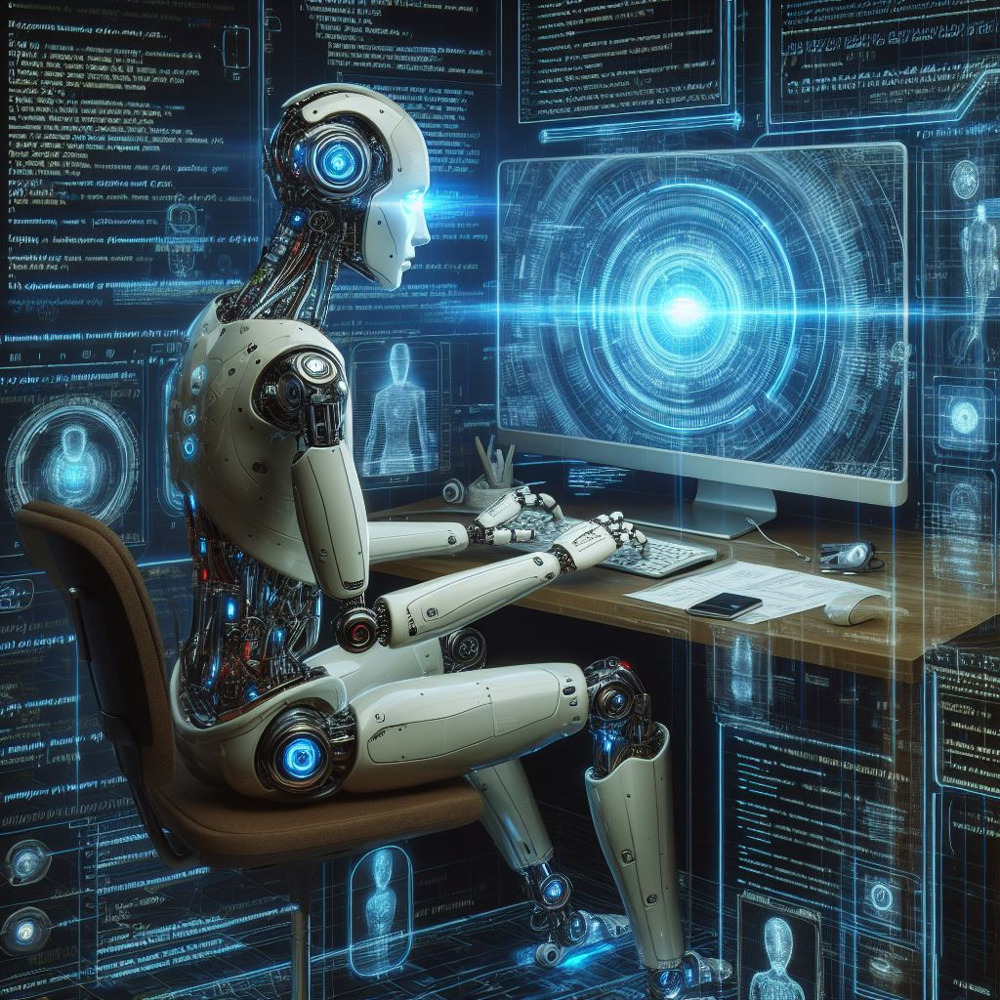
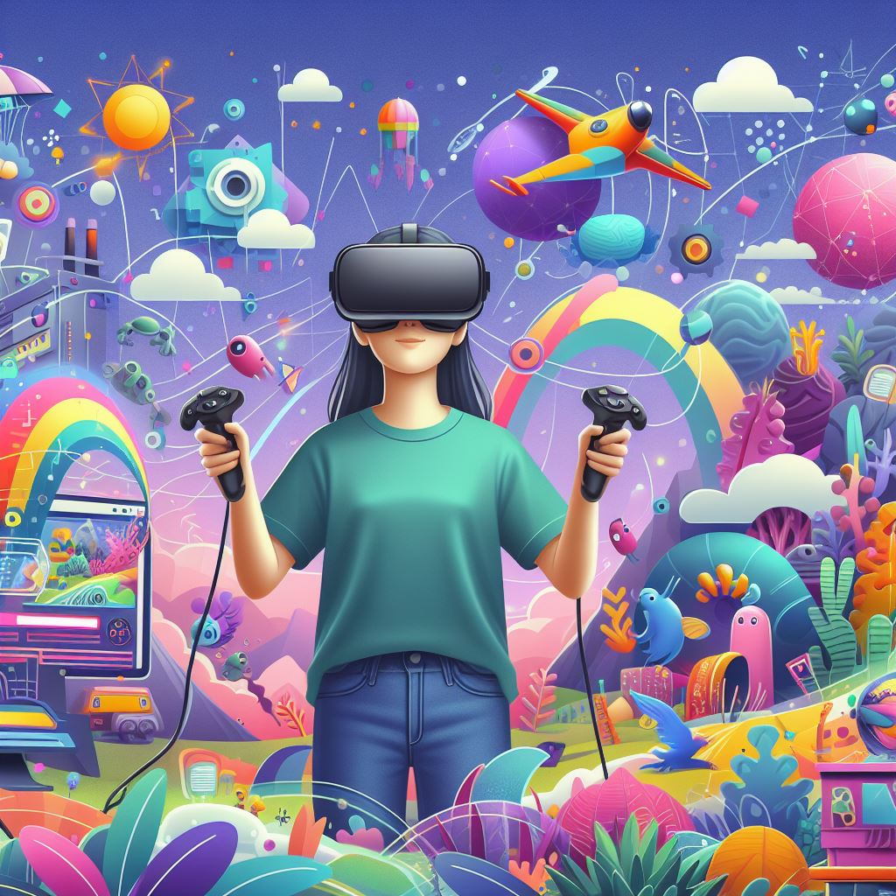
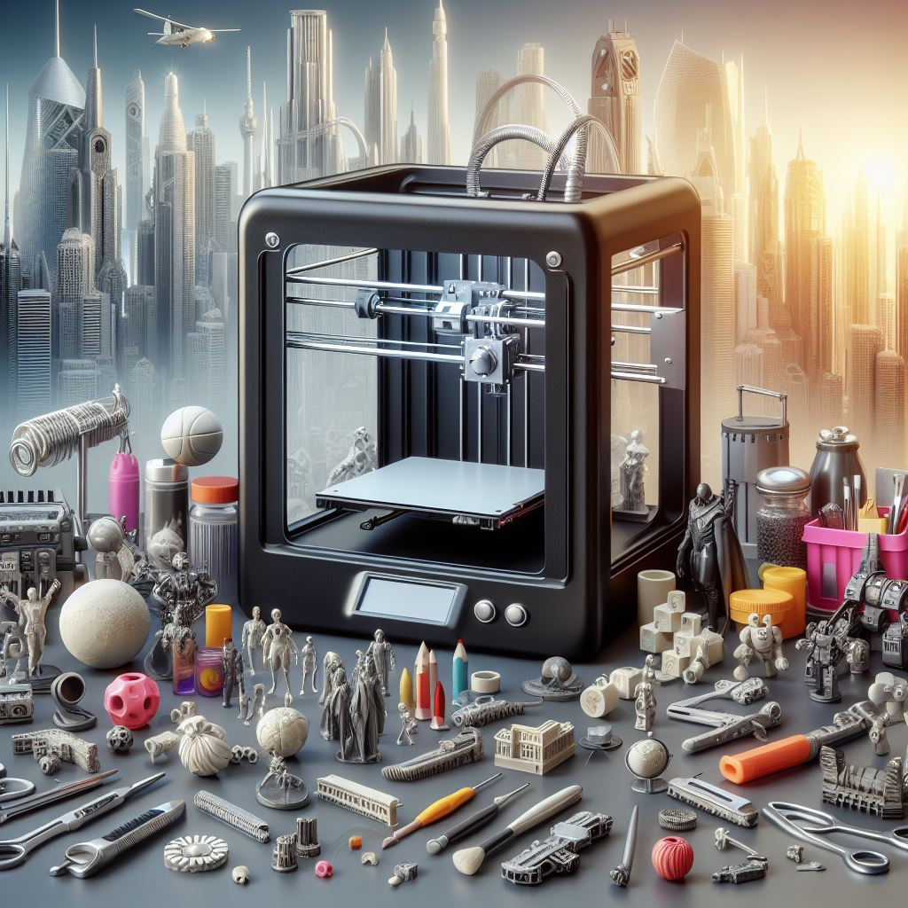
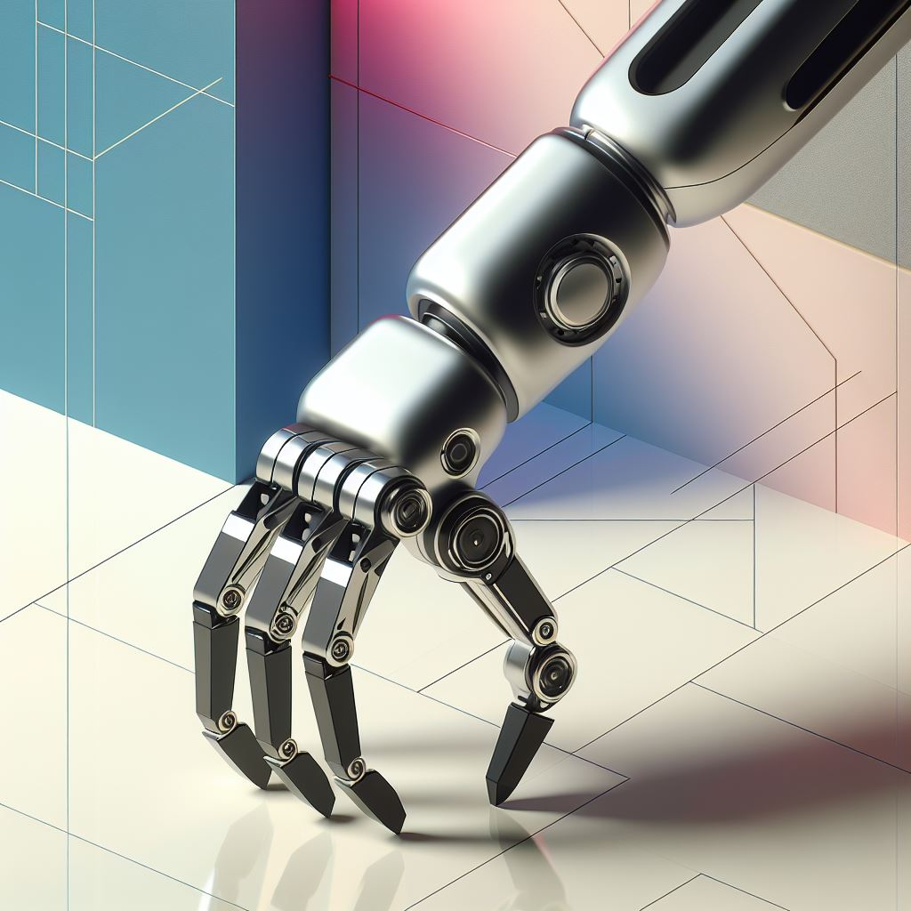

La inteligencia artificial (IA) es una rama de la informática que se enfoca en la creación de sistemas capaces de realizar tareas que normalmente requieren de la inteligencia humana. Estos sistemas pueden aprender, razonar y tomar decisiones basadas en datos.
La IA se utiliza en una amplia variedad de campos, como la medicina, la industria automotriz, la atención al cliente y la seguridad. Algunos ejemplos de aplicaciones de IA incluyen asistentes virtuales, reconocimiento facial, sistemas de recomendación y vehículos autónomos.

Internet de las cosas (IoT)
El Internet de las cosas (IoT) se refiere a la interconexión de objetos cotidianos a través de internet. Esto permite que estos objetos sean controlados y monitoreados de forma remota, creando un entorno más inteligente y conectado.
El IoT tiene aplicaciones en diversos sectores, como el hogar inteligente, la salud, la agricultura y la logística. Algunos ejemplos de dispositivos IoT incluyen termostatos inteligentes, sistemas de seguridad conectados, sensores agrícolas y dispositivos de seguimiento de inventario.
Realidad Virtual (VR)
La realidad virtual (VR) es una tecnología que crea una experiencia inmersiva para el usuario, simulando la presencia en un entorno virtual. Utilizando dispositivos como cascos y guantes, los usuarios pueden interactuar con objetos y entornos virtuales de forma casi realista.
La VR se utiliza en ámbitos como el entretenimiento, la educación, la medicina y la arquitectura. Permite a los usuarios explorar lugares virtuales, realizar entrenamientos simulados y experimentar historias en 360 grados.

Impresión 3D
La impresión 3D es una tecnología que permite crear objetos tridimensionales a partir de un modelo digital. Funciona depositando capas sucesivas de material, como plástico o metal, hasta obtener el objeto deseado.
Esta tecnología tiene aplicaciones en la fabricación de prototipos, la medicina, la arquitectura y la industria. Se utiliza para crear piezas personalizadas, prótesis médicas, maquetas arquitectónicas y componentes de alta precisión.

Robótica
La robótica es un campo multidisciplinario que se ocupa del diseño, construcción y programación de robots. Los robots son máquinas automatizadas que pueden realizar tareas de forma autónoma o controlada por humanos.
La robótica se aplica en diversos sectores, como la manufactura, la exploración espacial, la medicina y la industria militar. Los robots pueden ser utilizados para realizar tareas peligrosas, repetitivas o de alta precisión, así como para asistir en la atención médica y en la investigación científica.

Computación en la nube
La computación en la nube es un modelo de entrega de servicios de computación a través de internet. Permite acceder a recursos como almacenamiento, servidores y aplicaciones de forma remota, sin necesidad de poseer infraestructura física.
Este modelo ha revolucionado la forma en que las empresas y los usuarios utilizan la tecnología. Proporciona flexibilidad, escalabilidad y reducción de costos al permitir el pago por uso y la capacidad de ajustar los recursos según las necesidades.